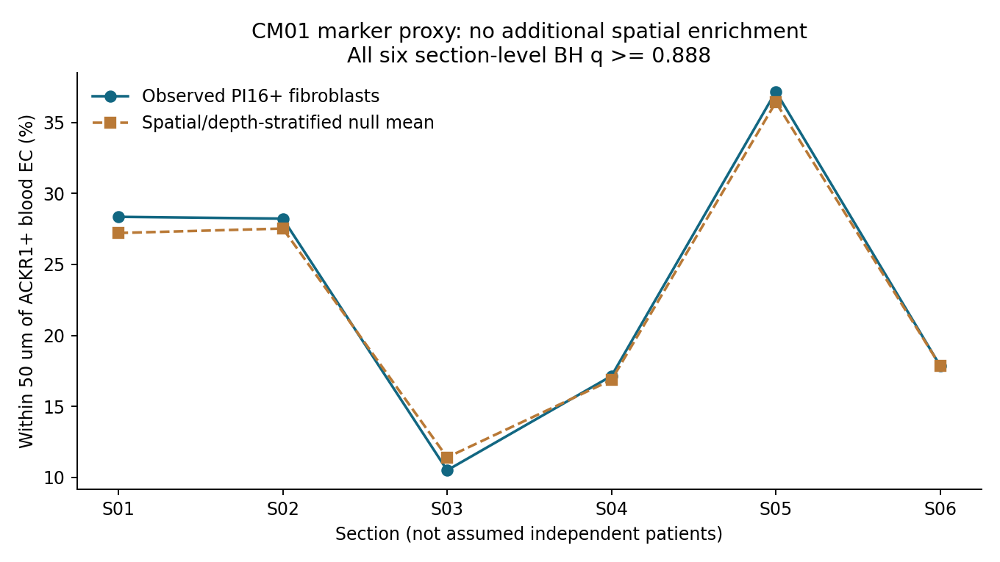

2026-11-15 · 新批次接收验收、组成稳健性、原生空间 marker 代理及募集轴共检出。
主轴为 ACKR1 内皮—PI16 成纤维细胞，CM12 tip 内皮—周细胞—巨噬细胞作比较，CM04 动脉内皮—平滑肌作血管对照。沿用旧内皮–NK–B hub 的“组成→空间→通讯→临床”顺序，但不复用旧模块身份。
首轮结论：ACKR1–PI16 的组成关联稳健；六张乳腺切片的50μm空间代理检验均未通过BH（q≥0.888）。当前应称候选血管相关组成模块，尚非已验证的空间hub。空间阴性限定于本代理、数据及零模型，不代表否定所有组织中的生态位。
95 个交接文件 SHA256 全部重新通过。R4 的 2,779,785 个细胞 ID 唯一；92,329 条 Plasma overlay 的键唯一且均为 R4 精确子集。1,196 单元、70 来源、44 节点；44 个频率列均可从 refined_counts 与实际父类分母独立重建。新分析未修改源文件或旧分析。
| cm | network_nodes | edges | network_weight_fraction | top5 |
|---|---|---|---|---|
| CM01 | 9 | 10 | 0.9221000563816344 | Endo_venous_ACKR1:0.582; Str_Fib_PI16:0.183; Mye_cDC2_CD1C:0.075; Mye_Mono_VCAN:0.066; CD8T_Tem_GZMK:0.043 |
| CM12 | 11 | 10 | 0.9321087139326841 | Str_Pericyte_RGS5:0.505; Endo_tip_ESM1:0.306; Mye_Mac_FOLR2:0.121; Endo_capven_COL15A1:0.058; Mye_Mac_LGMN:0.008 |
| CM04 | 11 | 10 | 0.9340086599991722 | Endo_arterial_GJA5:0.374; Str_SMC_MYH11:0.366; ILC_NK-CD56bright_XCL1:0.123; Mye_Mac_FOLR2:0.066; Mye_cDC2_CD1C:0.066 |
预先选定三个模块的全部原边，去重后共15边。主分析要求边两端父类各≥20细胞，另做≥1和≥50敏感性。来源×癌种内取秩并中心化，保留每组至少4单元且双方非恒定的层；1999次层内置换，15边统一BH。层内秩协方差汇总会更重视较大来源；这是发现数据的稳健性分析，不是独立复现。1,196个单元不能直接当成1,196名患者。
ACKR1–PI16：主分析521单元、64来源；原始Spearman 0.484，分层相关0.465，BH 0.00094。逐来源留出后的固定边相关范围0.472–0.498。此处没有重拟合每个留出集的nsNMF，也不声称作者网络阈值逐来源全部通过。
GZMK CD8 T–ACKR1 的分层支持较弱且靠近阈值（BH约0.049），不应据此宣称已建立免疫募集hub。CM12 的周细胞–FOLR2巨噬细胞分层相关约0.017，BH约0.764，三方协同尚不成立。
| a | b | modules | min_parent | n_units | n_sources | rho | stratified_n | strata | stratified_rho | permutation_p | BH |
|---|---|---|---|---|---|---|---|---|---|---|---|
| CD8T_Tem_GZMK | Endo_venous_ACKR1 | CM01 | 20 | 533 | 64 | 0.3024183174607769 | 489.0 | 44.0 | 0.13134707101397966 | 0.0425 | 0.049038461538461545 |
| Endo_arterial_GJA5 | Str_SMC_MYH11 | CM04 | 20 | 521 | 64 | 0.3302617044919714 | 481.0 | 48.0 | 0.2808860455767762 | 0.0005 | 0.0009375 |
| Endo_tip_ESM1 | Mye_Mac_FOLR2 | CM12 | 20 | 586 | 66 | 0.2366138919133598 | 539.0 | 47.0 | 0.3399076665895226 | 0.0005 | 0.0009375 |
| Endo_tip_ESM1 | Str_Pericyte_RGS5 | CM12 | 20 | 521 | 64 | 0.4722033771992041 | 481.0 | 48.0 | 0.3690185611980093 | 0.0005 | 0.0009375 |
| Endo_venous_ACKR1 | Str_Fib_PI16 | CM01 | 20 | 521 | 64 | 0.4843953520172792 | 462.0 | 44.0 | 0.46540611111520547 | 0.0005 | 0.0009375 |
| Mye_Mac_FOLR2 | Str_Pericyte_RGS5 | CM12 | 20 | 675 | 65 | 0.13644650183452206 | 658.0 | 59.0 | 0.01689878414005944 | 0.7635 | 0.7635 |
复用六张既有乳腺Xenium切片的已审核大类身份/QC、原生微米坐标与细胞顺序；逐文件重新核对哈希。定义ACKR1阳性的血内皮和PI16阳性的成纤维细胞作为marker代理，不能等同于精确R4亚型或完整CM01投射。
主半径50μm；25/100/200μm仅作描述性敏感性。以500μm空间块×测量深度四分位为层，在成纤维细胞中置换PI16阳性标签999次；按完成切片统一BH。该零模型控制局部空间块和深度，不完全控制组织学区室/TLS。距离是细胞质心距离，不是真实血管壁接触。切片内P值不代表患者级复制。
| unit | radius_um | ACKR1_EC | PI16_fib | other_fib | PI16_near_fraction | other_fib_near_fraction | PI16_median_distance_um | null_mean_50 | excess_50 | permutation_p_50 | null_sd_50 | BH_across_sections |
|---|---|---|---|---|---|---|---|---|---|---|---|---|
| S01 | 50 | 2649 | 321 | 12984 | 0.2834890965732087 | 0.10420517560073937 | 83.40122322522214 | 0.2721007611973344 | 0.011388335375874303 | 0.55 | 0.018372755259453824 | 0.8879999999999999 |
| S02 | 50 | 6781 | 861 | 9317 | 0.28222996515679444 | 0.2838896640549533 | 79.0747854767168 | 0.2752252833553646 | 0.007004681801429824 | 0.54 | 0.011279991896413821 | 0.8879999999999999 |
| S03 | 50 | 2639 | 200 | 2487 | 0.105 | 0.12545235223160434 | 151.6266254669925 | 0.1140990990990991 | -0.009099099099099103 | 0.592 | 0.01464936152131455 | 0.8879999999999999 |
| S04 | 50 | 2581 | 280 | 7206 | 0.17142857142857143 | 0.23480432972522897 | 116.84944890208394 | 0.16857571857571857 | 0.0028528528528528607 | 0.92 | 0.01832420733661659 | 1.0 |
| S05 | 50 | 5670 | 1216 | 13588 | 0.3717105263157895 | 0.32513982926111273 | 65.36277878004086 | 0.3641528041199094 | 0.007557722195880079 | 0.523 | 0.011346963247598998 | 0.8879999999999999 |
| S06 | 50 | 3755 | 280 | 15737 | 0.17857142857142858 | 0.1737942428671284 | 110.72951711841745 | 0.17863577863577865 | -6.435006435007162e-05 | 1.0 | 0.018906895060526313 | 1.0 |

本轮仅检验PI16阳性成纤维细胞中的CCL19/CCL21/CXCL12与B/T/NK细胞中CCR7/CXCR4的原生RNA检出及50μm邻近。以下全量结果包括零值；没有把这些计数称作显著配体–受体互作、方向性或因果。正式CellChat/双来源scRNA支持与配体受体条件零模型尚未完成。
| unit | ligand | receptor | PI16_fib_ligand_positive | immune_receptor_positive | receptor_cells_with_ligand_sender_50um | status |
|---|---|---|---|---|---|---|
| S01 | CCL19 | CCR7 | 20 | 16 | 0 | descriptive_native_codetection_not_interaction_test |
| S01 | CCL21 | CCR7 | 1 | 16 | 0 | descriptive_native_codetection_not_interaction_test |
| S01 | CXCL12 | CXCR4 | 137 | 1183 | 40 | descriptive_native_codetection_not_interaction_test |
| S02 | CCL19 | CCR7 | 76 | 680 | 6 | descriptive_native_codetection_not_interaction_test |
| S02 | CCL21 | CCR7 | 18 | 680 | 5 | descriptive_native_codetection_not_interaction_test |
| S02 | CXCL12 | CXCR4 | 562 | 17543 | 809 | descriptive_native_codetection_not_interaction_test |
| S03 | CCL19 | CCR7 | 6 | 11 | 0 | descriptive_native_codetection_not_interaction_test |
| S03 | CCL21 | CCR7 | 0 | 11 | 0 | descriptive_native_codetection_not_interaction_test |
| S03 | CXCL12 | CXCR4 | 79 | 472 | 0 | descriptive_native_codetection_not_interaction_test |
| S04 | CCL19 | CCR7 | 30 | 168 | 2 | descriptive_native_codetection_not_interaction_test |
| S04 | CCL21 | CCR7 | 3 | 168 | 0 | descriptive_native_codetection_not_interaction_test |
| S04 | CXCL12 | CXCR4 | 136 | 6189 | 66 | descriptive_native_codetection_not_interaction_test |
| S05 | CCL19 | CCR7 | 100 | 205 | 5 | descriptive_native_codetection_not_interaction_test |
| S05 | CCL21 | CCR7 | 13 | 205 | 0 | descriptive_native_codetection_not_interaction_test |
| S05 | CXCL12 | CXCR4 | 900 | 4669 | 186 | descriptive_native_codetection_not_interaction_test |
| S06 | CCL19 | CCR7 | 33 | 277 | 3 | descriptive_native_codetection_not_interaction_test |
| S06 | CCL21 | CCR7 | 2 | 277 | 0 | descriptive_native_codetection_not_interaction_test |
| S06 | CXCL12 | CXCR4 | 154 | 6604 | 166 | descriptive_native_codetection_not_interaction_test |
本轮未运行临床/ICI模型。当前单marker空间代理不能直接替代固定的亚型表达签名；既往I-SPY2结果已被探索，不能作为新签名的独立确认。完成多marker亚型验证、患者/切片映射、组织学/TLS校正和冻结跨平台可测签名后，再检验相对于总EC、总成纤维、pan-T和TLS的增量关联及治疗交互。
${PROJECT_ARCHIVE_ROOT}/vascular_downstream_20261115_v1/原交接目录：w2o_annotation_r4_covarnet_k15_20261115_v1。代码、冻结方案、输入验收及详细汇总保留服务器；本地只保留代码和小型聚合结果。无公共仓库发布。